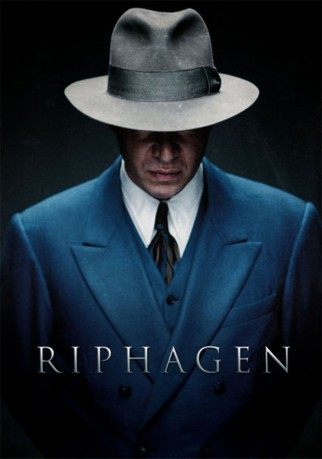

#4579 Riphagen
 
 IMDB-Wertung: 7.1 / 10
IMDB-Wertung: 7.1 / 10  Metascore: 0
Metascore: 0 
Dries Riphagen (Jeroen van Koningsbrugge) spürte während des Zweiten Weltkriegs in den Niederlanden untergetauchte Juden auf und erpresste sie. Hunderte trieb der Gangster, der schon vor dem Krieg eine der führenden Figuren der Amsterdamer Unterwelt war, so in den Tod… Dieser Film erzählt seine Geschichte…
Jahr: 2016
Dauer: 131 Minuten
FSK:
Land: Niederlande Studio: September FilmTonspuren:
Untertitel: Deutsch,
Auflösung: 1080p (1920x800) Größe: 6092 MB
Genre: Krieg
Regisseur: Pieter Kuijpers
Drehbuch: Will De Los Santos
Soundtrack:
Darsteller:
- Jeroen van Koningsbrugge als Dries Riphagen
- Lisa Zweerman als Greetje
 Huub Smit als Toon Kuijper
Huub Smit als Toon Kuijper- Peter Blok als Gert van der Veen
- Jos Smit als Lid KP #1
- Bob Stoop als Charly Hartog
- Sieger Sloot als Frits Kerkhoven
- Lukas Dijkema als Barman stamcafé
- Anna Raadsveld als Betje
- Kay Greidanus als Jan
- Sigrid ten Napel als Lena
- Guido Pollemans als Harry Rond
- Michel Sluysmans als Sanders
- Tjebbo Gerritsma als Joop Out
- Mark Rietman als Einthoven
- Ad Knippels als Portier Landsdrukkerij
- Micha Hulshof als Albert Kok
- Ronald Armbrust als Karel Hofmann
- Ad van Kempen als Meneer de Wit
- Cecile Heuer als Marie de Mol
- Antoinette Jelgersma als Esther Schaap
- Britte Lagcher als Zusje Greetje
- Dimme Treurniet als Garagehouder
- Steef de Bot als Arie
- Rick Nicolet als Mevrouw de Wit
- Richard Gonlag als Willy Lages
- Robin van den Akker als Iskander Lapian
- Menno Van Beekum als Directeur Landsdrukkerij
- Boris Saran als Gerhard Badrian
- Nelleke Zitman als Moeder Betje
- Arjan Duine als Bewaker Tulpkazerne
- Peter Drost als Herbert Oelschlägel
- Michel den Hartog als Zwarte Politie Agent #1
- Rogier in 't Hout als Joost
- Nirman Wolf als German Soldier
- Ian Blom als Gerrit Verbeek
- Jur van der Lecq als Eigenaar huis Riphagen
- Jos Bakker als Arrestant
- Dennis Grotenhuis als Kemp
- Gitta Fleuren als Moeder Greetje
- Herman Egbers als Vader Greetje
- René Kortekaas als Nico(portier / uitsmijter
Datei: X:\2016(N-Z)\Riphagen (2016, FSK, 1920x800).mkv seit 18.10.2016
Festplatte: HD 2016(A-Z)
 Es gibt insgesamt 182 Filme in der Gruppe '2016(N-Z)'
Es gibt insgesamt 182 Filme in der Gruppe '2016(N-Z)'